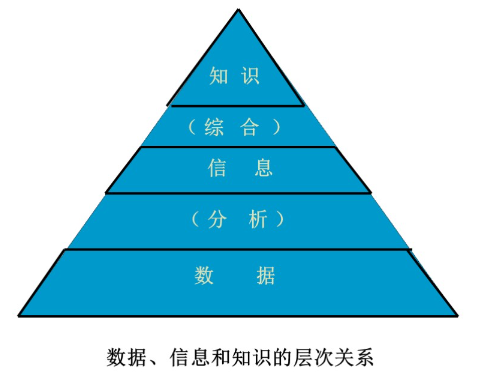

问题和知识表示
知识的基本内容
数据和信息、知识
数据：包含事实和数字、未经加工的事实和符号。
信息：从数据中提炼出来的有关信息、经过分析处理的数据形成信息。数据是信息的载体和表示，信息是数据在特定场合下的具体含义。
知识：是有关信息关联在一起所形成的信息结构，反映客观世界中事物之间的关系。

知识具有一下的特点：
- 客观性
- 相对正确性：在一定条件、时间、环境下
- 进化性
- 依附性：离开载体的知识是不存在的
- 不确定性
- 经验性
- 可表示性
- 可利用性
- 可重用性
- 共享性
知识的层次
- 事实
- 概念
- 规则
- 启发式知识
知识的分类
- 作用范围：常识性知识，领域性知识
- 作用及表示：事实性知识、过程性执行、控制性知识
- 确定性：确定性知识、不确定性知识
- ...
知识表达方法
知识表示是如何将以获得的有关知识以计算机易于接受的形式加以合理的描述、存储、有效的利用。
状态空间的表示
利用状态变量和操作符号，表示系统和问题的有关知识的符号体系。
使用三元组表示：
- 是初始状态向量
- 是操作，表示引起状态变化的过程性知识的一组关系或者函数
- 是目标状态向量
这种状态空间的变化可以使用图的方式表示出来：
图中的：
- 节点：相应的状态描述
- 弧线：表示操作和状态的变化
寻找操作系统等价于寻求图中的某一路径。最佳路径就是两节点间具有最小的代价。
在状态描述中引入变量
与或树表示
问题归约法：已知问题描述，通过一系列的变换将问题转换为一个子问题的集合，并可以直接求解，解决初始问题。
与或图：使用类似于图的结构来表示把问题归约为后继问题的替换集合。
- 与图：将复杂的大问题分解为一组简单的小问题
- 或图：将复杂的大问题变化为等价或者等效的问题
或与图由以下四个部分组成：
- 初始节点：原始问题
- 终叶节点：本原问题，没有后继节点
- 与节点：子问题对应的节点为与逻辑
- 或节点：子问题对应的节点为或逻辑
- 可解节点：
- 终叶节点为可解节点
- 非终叶节点为或节点，后继节点中至少存在一个可解节点
- 非终叶节点为与节点，后继节点均为可解节点
- 不可解节点：同可解节点对应的节点
产生式规则
产生式规则也称为基于规则的知识表示。产生式规则的基本结构分为： 产生式规则的特点：
- 善于表达领域知识
- 控制和知识相分离
- 知识的模块性强
- 便于实现解释推理
- 便于使用启发性知识
同时产生式规则的缺点是：
- 单条规则容易解释，但是规则之间的逻辑关系难以确定
- 规则数太大时，知识库的一致性难以维护
- 某些类型的知识难以表示，如结构性的知识
谓词表示法
命题逻辑和谓词逻辑是人工智能应用中的两种逻辑。
- 命题：具有真假意义的语句。常常使用大写字母表示。